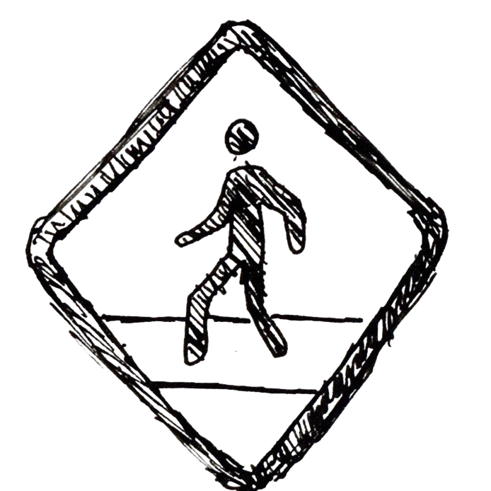
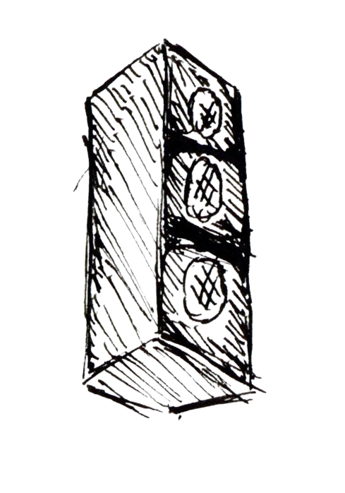

Field Notes
These notes were taken while walking through the city; pausing at intersections, standing under traffic lights, watching reflections move across glass towers. I wasn't looking for landmarks. I was looking for signals.

Crosswalk timers. Flashing brake lights. LED storefronts fighting for attention. Subway echoes beneath the pavement. These small instructions shape how we move, when we stop, and where we look.
The city is constantly transmitting. These notes document those transmissions: raw observations of how light, sound, and structure create a living system of communication. I plan on having these notes go down the page and having sketches in the corners.